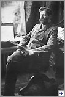
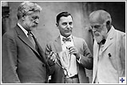

George Foster Peabody (1852-1938)
George
|  |
| George Foster Peabody |
Business Career
The mercantile business proved to be a good choice for Peabody. He joined the Reformed Church of Brooklyn Heights, where he met investment banker Spencer Trask, who became not only a good friend but a business partner as well. In 1881 Peabody became a partner in Trask's new investment firm, Spencer Trask and Company. During the 1880s and 1890s the company began to work in several lucrative fields, including electrical construction financing and railroad construction in the western United States. Peabody ran most of the company's railroad investments. Cognizant of such undesirable business practices as rate wars, which were beginning to proliferate in the railroad industry, Peabody advocated government ownership of railroads, and he believed regulation could be the first step in correcting these practices.
Philanthropy and Politics
After Peabody joined the Episcopal Church in 1880, he became concerned with promoting education
|  |
| Peabody, Hodgson, Barrow |
An
| Peabody Award |
In 1921 Peabody married Katrina Trask, the widow of Spencer Trask, at Yaddo, an artists' community founded by the Trasks on their 400-acre estate in Saratoga Springs, New York. Katrina Trask, who had been in frail health, died on January 8, 1922, less than a year after their marriage.
In 1923 Peabody purchased a residence at Warm Springs, where he died on March 4, 1938. His ashes were later interred at Yaddo, in a grave near his wife.
Suggested Reading
"George Foster Peabody (1852-1938)," Broadcasting and Cable, May 26, 2003.
Louise Ware, George Foster Peabody: Banker, Philanthropist, Publicist (Athens: University of Georgia Press, [1951].)
Sheila Devaney, University of Georgia
Published 2/10/2006
|
Printable Version
The NGE is not responsible for the content of external Web sites. |
Home | What's New | Index | Quick Facts | About NGE | Help | Contact
Destinations | Galleries | Features
A project of the Georgia Humanities Council, in partnership with the University of Georgia Press, the University System of Georgia/GALILEO, the Office of the Governor, and the Georgia Department of Technical and Adult Education.
All rights reserved.